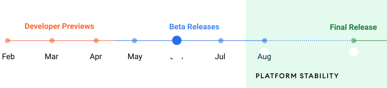

Pixel刷机Android 12体验
Android 12在今年的Google I/O大会上一经推出，便如往常一样引起了全球开发者和吃瓜群众的关注。除去与iOS靠近的隐私改进和新功能之外，最重大的改变莫过于焕然一新的UI设计。无论评价如何，UI的全方位改进使得Android 12成为近几个版本Android中我们最想体验的一个。
在Google的时间表中，Android 12已经基本进入了发布阶段，基于Android 12的各种定制UI也在近期纷纷展开内测。然而第三方厂商似乎并没有拥抱Android 12最重大的改进，也就是Material You，这一充满活力、细节和优雅的UI设计系统只有在Google Pixel设备上才能完整地体验到。

本博客所有文章除特别声明外，均采用 CC BY-SA 4.0 协议 ，转载请注明出处！